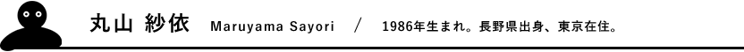
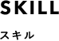
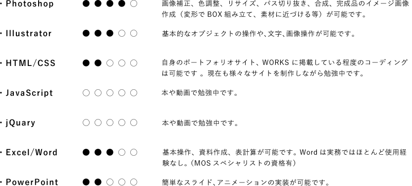

3年間美術の専門学校でビジュアルデザイン（イラストレーション・グラフィックデザイン専攻）を学び、卒業後は5年間程アルバイトをしながら絵を描き、展示をする等の活動しておりました。
その後、派遣社員としてゲーム会社でPhotoshopを使用した画像加工業務、劇場のWEB更新業務等の仕事を経験していく中で、より「自分でデザインしたものを形にするクリエイティブな仕事がしてみたい」という思いが強くなり、一から独学でWEBデザインの勉強を始めました。デザインの知識を一つ一つ学んでいく中で、ものをつくっていく過程の楽しさや喜びを改めて感じ、WEBデザイナーの仕事に就きたいと思い応募させていただきました。


- 日常的に絵を描いたりデザインを見ることが好きなので、アイデアを考えることと、ものを作り出すことが好きです。
- 作品制作や仕事をするにあたって、納得できるまで試行錯誤を続ける探究心があります。
- 集中して地道にコツコツ作り上げていく作業が好きです。
- 今後の目標は、実務経験を数多く積み、デザインやコーディングのスキルはもちろん、相手の気持ちや立場になって考えられるようなデザインができるようになりたいです。